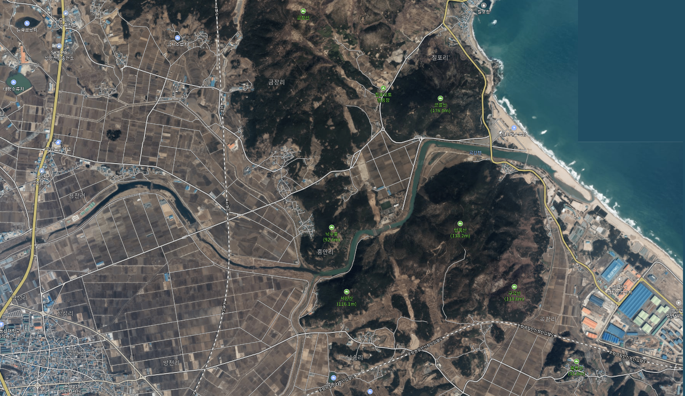

|
곡강최가는 기원전 2세기 경에 최숭(崔崇)에 의해 건국한 단군조선의 제후국으로 왕검성(현 평양)에 있다가 고구려의 대무신왕에 의해 패망한 후 오천여명이 신라에 귀순하였다고
하는 낙랑국왕 최리(註)의
후예로 추정되는 진한(辰韓)의 육부촌 중 돌산 고허촌 촌장 소벌도리의 23세손 문창후 최치원공의 종증손이신 휘 호(湖)공을 시조로 하며, 시조공의 증조고
서원(棲遠)공께서 당(唐)나라에 유학 중인 종형 치원공의 아버님의 병환이 위중하여 종형의 귀국을 독려하기 위하여 당나라를 방문한 사실이 계원필경에 전하며,
치원공께서 당나라에 건너가 빈공과에 장원으로 급제하고 문장으로 명성을 떨치시고, 28세에 귀국할 때에 같은 해에 급제한 중국인 친구 고운(顧雲)이 다음과 같은 시를 지어주며
송별을 아쉬워하였습니다. 다음은 [삼국사기] 열전 최치원 예문지(藝文志) “최치원의 46집1권, 계원필경(桂苑筆耕) 20권"에 있는 치원공에 관한 시입니다. 이는 시조공과 치원공께서는 모두 곡강에서 태어나서 살았음을 증명하는 것입니다. |
||
|
我聞海上三金鳌
金鼇頭戴山高高
山之上兮珠宮貝闕黃金殿
山之下兮千里萬里之洪濤
傍邊一點鷄林碧
鼇山孕秀生奇特
十二乘船渡海來
文章感動中華國
十八橫行戰詞苑
一箭射破金門策 |
||
|
 안타깝게도 자라의 목에 해당하는 서원산과 방목산의 사이를 관통하여 [포항~울진간의 고속도로]공사를 하고 있네요! |